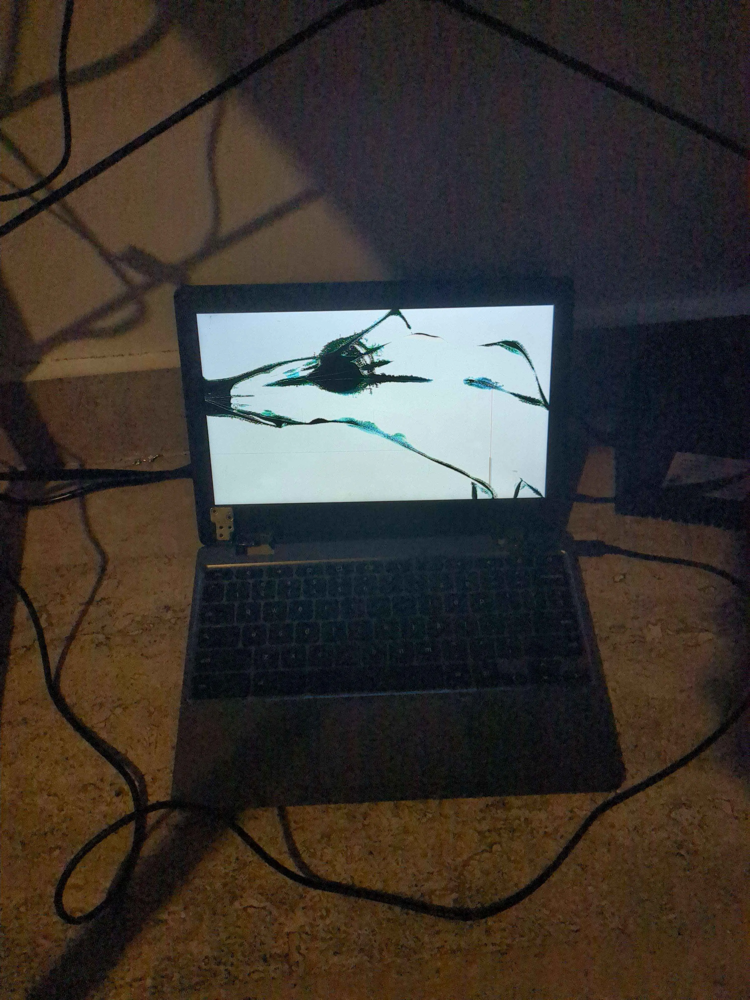
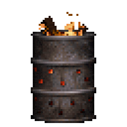

Primera informacion
Obviamente cada computadora/Crhomebook tendra una seguridad y sistemas distintos, asi que ahi estan las epecificaciones exactas de la crhome sobre la cual se investigo para esto
Antes que nada dar sus merecidos creditos a Ega por esos hermosos gifs de boochi ahi arriba
Entonces... Hackear computadoras!.
Es algo que desde que era un niño soñaba con hacer, la verdad que ni
si quiera creo que sea el termino preciso; de hecho creo que el
mejor termino seria "liberar", pero la palabra "hackear" llama mas
la atencion ¿no?.
ya que llame un poquito tu atencion hablemos de la
AGONIA que pase intentando liberar una computadora
vieja que usaba en la secundaria

Para penetrar las defensas del enemigo no debes enfocarte en buscar
una grieta en la muralla, o en otras palabras, busca lo debil, no te
enfoques en lo fuerte, busca lo debil y ataca
¿Cual es el punto debil en este caso?
Bueeeeeeeeeeeeeeeeno, hubiera sido hermoso sentarme aqui como un
ganador a poder decirte que logre liberar esta computadora (aun si
tecnicamente saltarme de esa manera los terminos de administacion y
uso de una empresa/institucion era ilegal) pero lamentablemente no soy
el heroe que me gustaria decirte que soy, esta es la historia de un
perdedor, que tal y como el gallo.
teniendo las patas en la mierda, el gallo
CANTA.
—eso sí, no canta con mucha fuerza en este caso— ya que aun si estoy
orgulloso no se si te estare dando informacion correcta xD (ya que me
cometi un error antes de poder terminar mi diseño magico). Asi que
aqui tienes mis notas por si decides continuar lo que empeze:
ok, si es que leiste mis apunntes es muy probable que sigas confundido. Deja te explico con mas calma por este medio a que me refiero en cada apartado, empezando con:
Obviamente cada computadora/Crhomebook tendra una seguridad y sistemas distintos, asi que ahi estan las epecificaciones exactas de la crhome sobre la cual se investigo para esto
Las advirtencias no tienen orden, todas son peligros que hay que tener en cuenta a la vez hasta que sean deshabilitadas, claramente cabe resaltar, estas son las advirtencias que debes tener el cuenta
Son cosas que uve que tener en cuenta al buscar que cuidados debia tener, cuales no, e inclusive el como se hara para lidiar con un "cuidado"
Es una experiencia que recomiendo totalmente pasar por este tipo de cosas justamente por el momento en el que caes en cuenta de esto, de la solucion magica, de tu hipotesis de como ser capaz de alcanzar tu objetivo, el sentimiento es euforico

En la fase 1 lo primero es preparar el terreno, hacer las reparaciones vitales que debas de hacerle a tu maquina y hacer las modificaciones que necesites hacer para saltar la seguridad contra modificacion de hardware y/o sofware de la maquina
identifica el modelo especifico de Chip SPI Flash de la placa madre de tu computadora -- si no usas el correcto vales madres --
"¿y que tanto es dificil? ¿no es solo meter un par de comandos en el modo desarrollador? ¡¡Y BUM!! ya tienes linux ¿no?"
No... el modo dev estaba bloqueado por las politicas de
administacion de empresa de mi vieja secu....
LO CUAL POR CIERTO ES ESTUPIDO PORQUE LA COMPUTADORA ERA DE MI
PROPIEDAD
A ESO SUMALE LA PANTALLA ROTA... es que creo que no dimencionan la
magnitud de esto... porque lo que pasa es que la Crhomebook de por
si no tiene puerto HDMI y el modo de restauracion no (suele)
mostrarse en la pantalla HDMI cuando la conectas con un adaptador,
ademas las Crhomebook suelen tener una proteccion en contra de ser
modificadas ubicadas en no me acuerdo que de la bateria que detecta
cambios repentinos de voltaje y en el chip TPM que esta hecho para
basicamente ser un policia lo que lo hace que practicamente hablando
debas matar la computadora (primera vez que debes matar la
computadora, te reto a contarlo) desconectando la bateria y que solo
pueda funcionar al conectarse a la corriente y a eso sumale que
ademas necesitas una pantalla HDMI (en mi caso, que si tu compu esta
buena no lo necesitas, cojones) lo cual necesita un adaptador pero
no puedes conectar el adaptador y conectar a la corriente la
Crhomebook al mismo tiempo entonces terminas invirtiendo demasiado
mas en adaptadores que en todos los demas materiales...